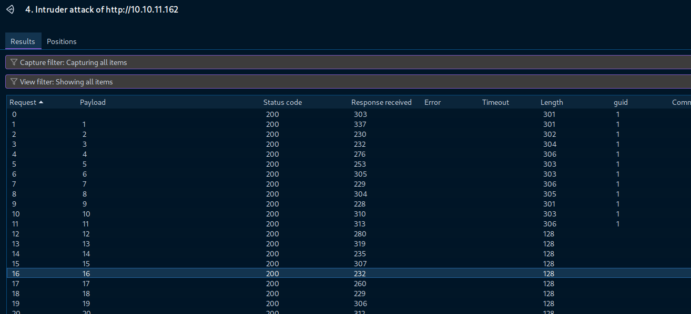

Mass Assignment leading to Local File Read.
Introduction
This blog focuses on the Mass Assignment vulnerability which leads to a Local File Read where the contents of the /etc/passwd were displayed. This is just a hackthebox machine called
BackendTwo.Enumeration
Of course, a typical approach (CTF style) to things like this... first I have fired up nmap:
So we got only 2 ports opened. Since it has port 80, I checked it using my browser.
Seems interesting. I used gobuster to further enumerate any possible endpoints.
Found two endpoints: /docs and /api, but I can't access /docs since I need to be authenticated and I don't have any credentials.
So I checked /api instead and found /v1
then I went further and found /user and /admin.
I checked the /admin endpoint. Maybe I am lucky or whatever. But no I was not, the admin endpoint needs to be authenticated. (as expected!)
So I checked the /user endpoint instead. Hmmmm, that seems odd. "Not found".
I tried putting some random username, in this case, administrator. I wanna shoot my luck in the air. Then I got this message.
It seems that it is accepting an integer value. So I tried putting an integer.
Now that's juicy and licious ~juicylicious.
I was curious how many users are there, so I tried shooting a random number ~ 1000, then it returned null. So maybe there's only few hundreds or even less than a hundred users in the system. So I used intruder.
As expected, only few users are there. There are 11.

guid so I could sort the results faster since all results will show status code 200. Hence I needed something to use to determine which is which.I checked out the last user that has a userid of 11.
Well I couldn't do anything much with these since I really do need to login and I don't have any credentials. I fuzzed for further endpoints and I got something:
Of course I couldn't go to login since I don't have any credentials, so luckily there is a /signup endpoint. I tried looking into it.
Well, I don't know the parameters that must be used so I put the following to check:
{
"key":"value"
}
So email and password are needed to signup. There we go, I was able to create a user.
Now, it's time to login.
Hmmm. I got an error. At first I wasn't really sure, then I changed the format.
Well, still the same. I added a Content-Type header and we got some access token.
I tried to access /docs endpoint without the access token and as expected, it said not authenticated.
Then I included the access token in the Authorization header, it went through.
Simple Modify Headers.I can now navigate without putting the access token in every request.
Upon looking around and tampering some things, the endpoint /api/v1/user/{user_id}/edit looks tender juicy üå≠.
I checked the account that I created which probably has the user_id 12 to check the information on it. So since according to the documentation, only the profile can be edited, but what if we can alter as well even the email? Let's try.
So instead of only putting the profile parameter, I included the email and a value not identical to the registered email. Upon sending the request, it displayed result: true. So probably that went through or something.
And it was altered. The email was altered instead of just the profile parameter.
Mass Assignment. This allows the attacker to modify the HTTP request to add new parameters which could create or replace variables in the application code which is originally not intended.At this point, upon knowing the vulnerability, remember that there is a parameter called is_superuser. This is probably relating to admin privileges. So I sent another request modifying the variable into true.
I checked the account that I created and now it's an admin!
Since I already have admin privileges, I went to check the admin endpoints if there are anything tender juicyüå≠. Then I found this one.
So I was thinking maybe we could read files from the server with this. So according to the documentation, the value should be in base64_url. So typical CTF things, I encoded /etc/passwd using base64. 
That's weird. I got permission error, but I am already an admin. That should have worked. But then I remember my access token is not yet admin. So I needed a new access token for this to work.
After generating a new access token, the contents of the /etc/passwd was displayed. Sweet!üå≠